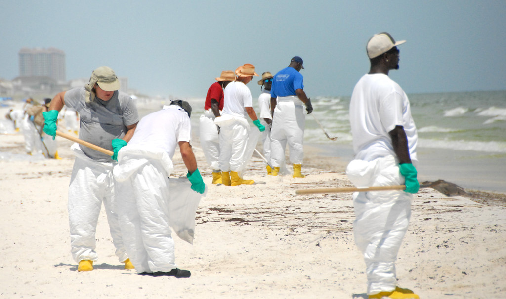
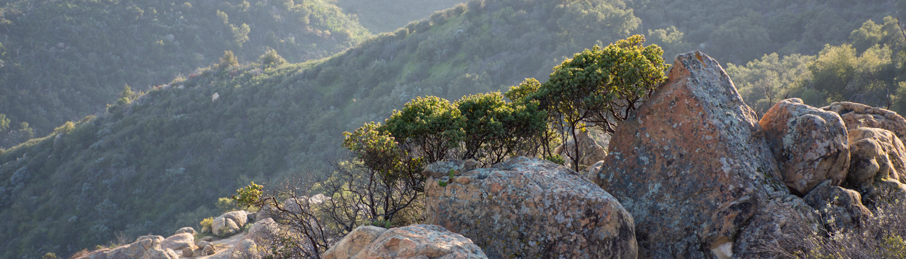
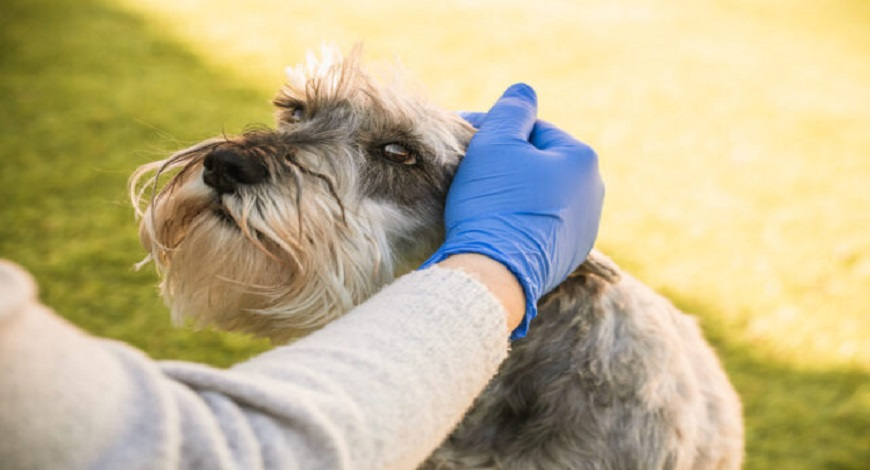
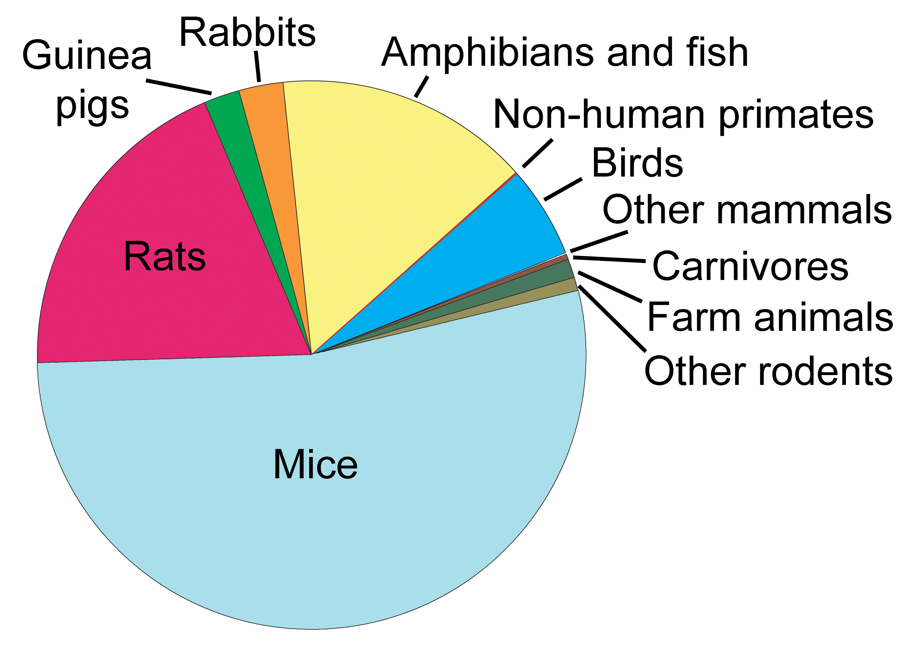

Participate in or organize your own neighborhood clean-up to help preserve the habitats of other wildlife and threatened species.
Reduce, Reuse Recycle
Preserve energy. Reduce energy use by driving less, utilizing energy-efficient automobiles and appliances, and simply turning off the lights when leaving a room.
Respect wild animals by keeping a safe space between you and them, never getting too close, and never taking them out of their natural habitat. Avoid handling young animals if you discover them, especially in the spring.
We have the authority and capability to slow this the rate of extinction in wildlife. We can reduce the rate of habitat deterioration, which is mostly caused by a decline in biological variety worldwide. Making even little improvements in our daily lives can make a huge difference.

30,000 species per year are going extinct. The goal is simply to keep the human race at a level where there is enough clean food and water to survive.

Create a Certified Wildlife Habitat in your garden or balcony to aid in the migration of birds and butterflies. Learn how to provide migratory birds the rest and food they need to get where they're going.
SAY NO TO ANIMAL TESTING PRODUCTS
A scientific experiment or test that forces a live animal to endure something that is likely to cause them pain, suffering, discomfort, or long-term harm is considered an animal test. According to estimates, around 110 million animals are killed in the United States each year for experimentation.

Nearly 60,000 dogs are used for “research, testing, teaching, or experimentation” each year. Despite the fact that chimpanzees are no longer used in research by the scientific community, a recent government study found that almost 71,000 macaques, baboons, marmosets, and other primates are utilized each year, with tens of thousands more being bred and kept in reserve.
Products that use animal testing:
1. Windex
2. Post-it notes
3. Mars Candy
5. Kleenex
6. Vaseline
7. Old spice
8. L’Oréal
9. Tide
10. Bounce

Products that don’t use animal testing
1. Trader Joes
2. Huda Beauty
3. Clean well
4. Garnier
5. Method
6. Dial
7. St. ives
8. Burts Bees